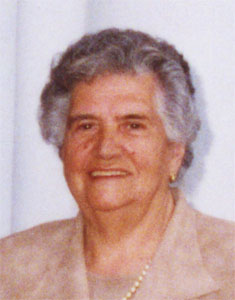

Filomena Simarro Navarro
Filomena Simarro Navarro  Filomena Simarro Navarro
Filomena Simarro Navarro 
 Haz clic aquí para detalles de la Familia de Filomena con Francisco García Cantarero
Haz clic aquí para detalles de la Familia de Filomena con Francisco García Cantarero
This page is within a frameset. View the entire genealogy report of Simarro Navarro families, or surname index of Simarro Navarro pedigrees or report summary of Simarro Navarro heritage from "Árbol Genealógico de Manolo y Amalia".
Ancestry Family Tree.
© 2006 GenoPro Inc. All Rights Reserved.